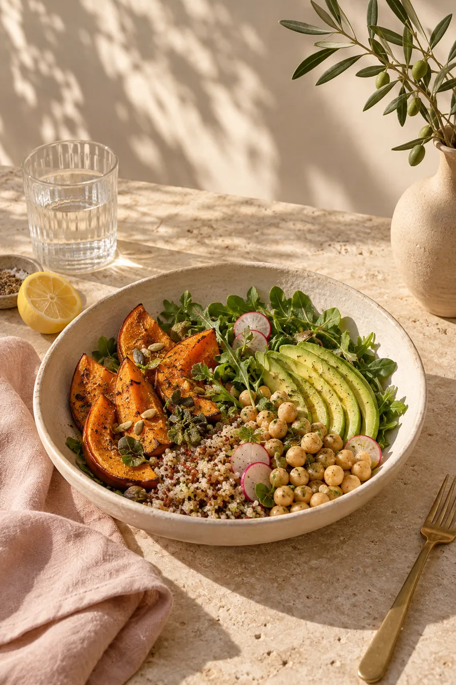
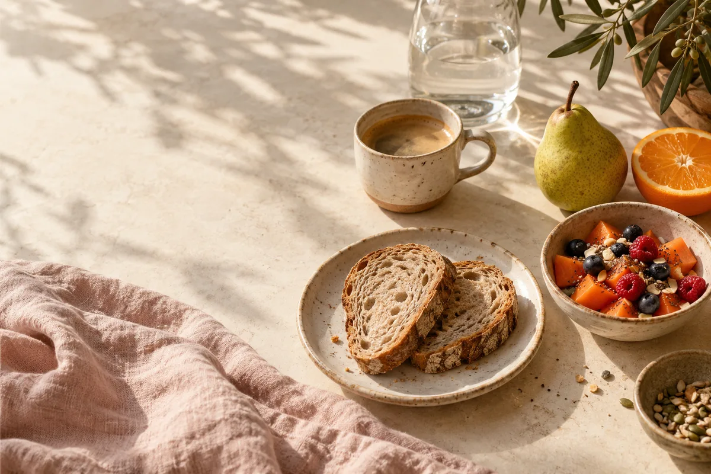

Nutrição com escuta e afeto
Nutrir o corpo.
Acolher a vida.
Uma alimentação que faz sentido para você.
Com equilíbrio, prazer e espaço para a vida real.
Cada pessoa, uma história.
Cada cuidado, um novo começo.

O cuidado começa na escuta.
01 / Meu olhar
Antes de falar de comida,
vamos falar de você.
Prazer, sou Fernanda Lemos.
Nutricionista, com um olhar para a pessoa inteira.
Alimentação também é rotina, memória, cultura e afeto. Por isso, acredito em um cuidado que começa conhecendo sua história, suas possibilidades e o que faz sentido no seu dia a dia.
A proposta é construir um caminho possível, com orientação e escolhas conscientes. Um passo de cada vez, respeitando o seu ritmo.
Encontre seu ponto de partida02 / Seu ponto de partida
O cuidado começa
onde você está.
Não precisa ter tudo resolvido para começar.
O que você gostaria de cuidar hoje?
Comer bem também precisa
caber na sua vida.
Seus horários, preferências e possibilidades entram na conversa. A ideia é aproximar o cuidado da sua rotina e encontrar escolhas que façam sentido para você.
- Olhar para os hábitos do dia a dia
- Conversar sobre organização e preferências
- Construir mudanças possíveis
Há espaço para o prazer.
E para a sua história.
Comer envolve muito mais do que nutrientes. Preferências, momentos à mesa e expectativas merecem escuta, em uma conversa acolhedora sobre alimentação.
- Reconhecer sua história com a alimentação
- Acolher dúvidas e dificuldades
- Buscar um caminho com mais autonomia
Você merece um lugar
na sua própria rotina.
Talvez o primeiro passo seja reservar um momento para você. Seus objetivos e o que você vive hoje ajudam a orientar a conversa e o planejamento do cuidado.
- Entender o que você busca neste momento
- Considerar seu contexto e suas necessidades
- Definir prioridades junto com você
03 / O acompanhamento
Um caminho construído
com você.
Cuidar da alimentação é um processo.
E cada etapa merece atenção.
- 01O encontro
Primeiro, a escuta.
Um espaço para conhecer você: sua história, sua alimentação, sua rotina e o que espera do acompanhamento. Suas dúvidas também fazem parte dessa conversa.
Sua história importa. - 02A construção
Um plano com sentido.
A partir desse olhar, o cuidado ganha direção. Objetivos e orientações são construídos considerando suas necessidades, preferências e possibilidades.
O cuidado se adapta a você. - 03A continuidade
Ajustar também é cuidar.
A vida muda, a rotina muda. Rever o caminho, conversar sobre as dificuldades e reconhecer cada avanço faz parte do acompanhamento.
Cada passo tem seu valor.

A vida acontece
ao redor da mesa.
Que o cuidado com a alimentação encontre espaço nos seus dias, nas suas escolhas e nos momentos que merecem ser vividos.
Com afeto, Fernanda.04 / Uma conversa aberta
Talvez você
esteja se perguntando.
Começar fica mais leve quando
há espaço para tirar dúvidas.
Preciso mudar tudo para começar?
Você pode chegar como está. A primeira conversa é justamente para entender sua rotina e pensar em prioridades possíveis. O acompanhamento é construído a partir do seu momento.
O acompanhamento considera minhas preferências?
Preferências, rotina, cultura alimentar e possibilidades são pontos importantes da conversa. O planejamento do cuidado considera suas necessidades individuais e aquilo que faz parte da sua vida.
O que devo levar para a primeira consulta?
Ao confirmar o agendamento, pergunte sobre as orientações para o primeiro encontro e a necessidade de levar exames ou outros documentos. Vale anotar suas dúvidas e o que gostaria de conversar.
Como saber os valores e as formas de atendimento?
Valores, horários, local e modalidades de atendimento devem ser confirmados diretamente com Fernanda antes do agendamento. As informações sobre o canal de contato estão na seção Vamos conversar.
Já tentei antes. Posso recomeçar?
Experiências anteriores também fazem parte da sua história. Você pode compartilhar o que funcionou, o que foi difícil e o que espera de um novo acompanhamento. Essa escuta ajuda a construir o próximo passo.
Um convite para cuidar de você
Seu próximo passo
pode ser mais leve.
Vamos conversar sobre o seu momento
e encontrar um começo que faça sentido?